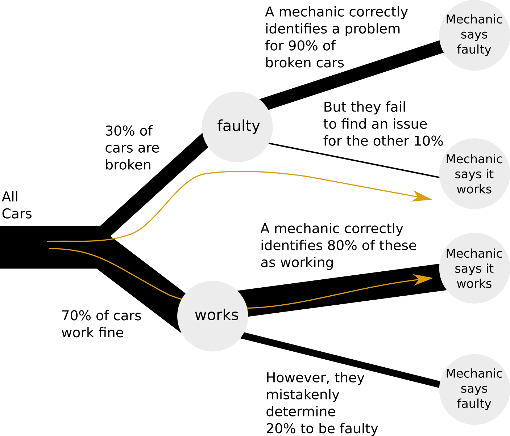
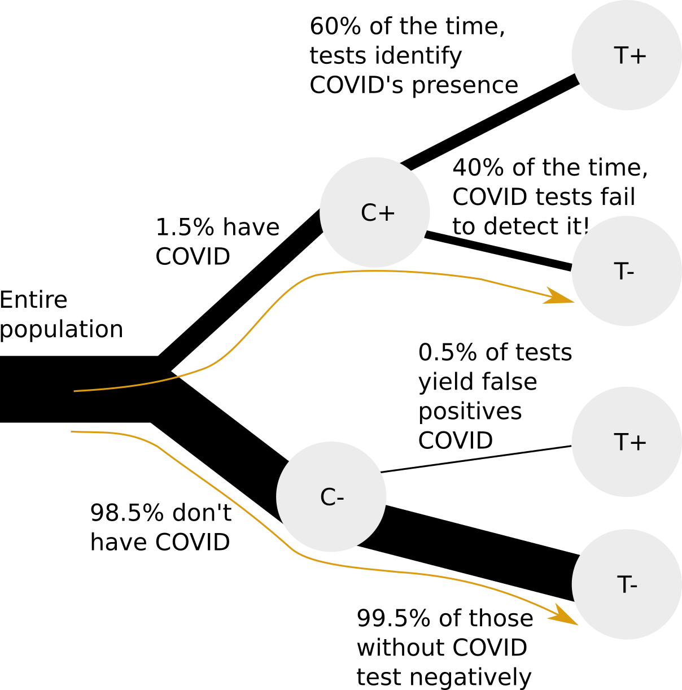
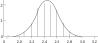

# The initial value of "a".
a = 1031 Bayesian Analysis by Simulation
This branch of mathematics [probability] is the only one, I believe, in which good writers frequently get results entirely erroneous. (Peirce 1923, Doctrine of Chances, II)
Bayesian analysis is a way of thinking about problems in probability and statistics that can help one reach otherwise-difficult decisions. It also can sometimes be used in science. The range of its recommended uses is controversial, but this chapter deals only with those uses of Bayesian analysis that are uncontroversial.
Better than defining Bayesian analysis in formal terms is to demonstrate its use. We shall start with the simplest sort of problem, and proceed gradually from there.
31.1 Simple decision problems
31.1.1 Assessing the Likelihood That a Used Car Will Be Sound
Consider a problem in estimating the soundness of a used car one considers purchasing (after (Wonnacott and Wonnacott 1990, 93–94)). Seventy percent of the cars are known to be OK on average, and 30 percent are faulty. Of the cars that are really OK, a mechanic correctly identifies 80 percent as “OK” but says that 20 percent are “faulty”; of those that are faulty, the mechanic correctly identifies 90 percent as faulty and says (incorrectly) that 10 percent are OK.
We wish to know the probability that if the mechanic says a car is “OK,” it really is faulty. Phrased differently, what is the probability of a car being faulty if the mechanic said it was OK?
We can get the desired probabilities directly by simulation without knowing Bayes’ rule, as we shall see. But one must be able to model the physical problem correctly in order to proceed with the simulation; this requirement of a clearly visualized model is a strong point in favor of simulation.
- Note that we are only interested in outcomes where the mechanic approved a car.
- For each car, generate a label of either “faulty” or “working” with probabilities of 0.3 and 0.7, respectively.
- For each faulty car, we generate one of two labels, “approved” or “not approved” with probabilities 0.1 and 0.9, respectively.
- For each working car, we generate one of two labels, “approved” or “not approved” with probabilities 0.7 and 0.3, respectively.
- Out of all cars “approved”, count how many are “faulty”. The ratio between these numbers is our answer.
In-place operators in Python
In the code that follows, we are going to use a new and neat feature of Python, called in-place operations.
We often find ourselves in the situation where we have some variable, say a, and we want to do some operation on the value of a and then store the result in a again.
Of course, we could do something like this:
# Set a to get the value of a plus 1.
a = a + 1
# Show the result.
a11Because this is such a common kind of thing to do, Python has special operators to do this for us, called in-place operators. For the example above, there is an in-place addition operator += that takes the value of the variable on the left hand side, adds the value on the right hand side, and stores the result in the variable on the left hand side. For example:
# The initial value of "b".
b = 10# Set b to get the value of b plus 1.
# Notice the in-place operator "+=".
b += 1
# Show the result.
b11There are also in-place operators for subtraction (e.g. c -= 3), multiplication (e.g. d *= 2), and division (e /= 2).
You will see us using the in-place += in the code below.
Here is the whole simulation of the car / mechanic problem:
Start of bayes_cars notebook
import numpy as np
# Set up the random number generator.
rnd = np.random.default_rng()
n_trials = 10000 # number of cars
# Counters for number of approved, number of approved and faulty
approved = 0
approved_and_faulty = 0
for i in range(n_trials):
# Decide whether the car is faulty or working, with a probability of
# 0.3 and 0.7 respectively
car = rnd.choice(['faulty', 'working'], p=[0.3, 0.7])
if car == 'faulty':
# What the mechanic says of a faulty car
mechanic_says = rnd.choice(['approved', 'not approved'], p=[0.1, 0.9])
else:
# What the mechanic says of a working car
mechanic_says = rnd.choice(['approved', 'not approved'], p=[0.7, 0.3])
if mechanic_says == 'approved':
approved += 1
if car == 'faulty':
approved_and_faulty += 1
k = approved_and_faulty / approved
print('Proportion of faulty cars of cars approved:', np.round(k, 2))Proportion of faulty cars of cars approved: 0.06The answer looks to be somewhere between 5 and 6%. The code clearly follows the description step by step, but it is also quite slow. If we can improve the code, we may be able to do our simulation with more cars, and get a more accurate answer.
Let’s use arrays to store the states of all cars in the lot simultaneously:
# Number of cars; we made this number larger by a factor of 100
n_trials = 1_000_000
# Generate an array with as many entries as there are cars, each
# being either 'working' or 'faulty'
cars = rnd.choice(['working', 'faulty'], p=[0.7, 0.3], size=n_trials)
# Count how many cars are working
n_working = np.sum(cars == 'working')
# All the rest are faulty
n_faulty = n_trials - n_working
# Create a new array in which to store what a mechanic says
# about the car: 'approved' or 'not approved'. Use
# dtype=object because we need to store strings.
mechanic_says = np.zeros(n_trials, dtype=object)
# We start with the working cars; what does the mechanic say about them?
# Generate 'approved' or 'not approved' labels with the given probabilities.
mechanic_says[cars == 'working'] = rnd.choice(
['approved', 'not approved'], p=[0.8, 0.2], size=n_working
)
# Similarly, for each faulty car, generate 'approved'/'not approved'
# labels with the given probabilities.
mechanic_says[cars == 'faulty'] = rnd.choice(
['approved', 'not approved'], p=[0.1, 0.9], size=n_faulty
)
# Identify all cars that were approved
# This produces a binary mask, an array that looks like:
# [True, False, False, True, ... ]
approved = (mechanic_says == 'approved')
# Identify cars that are faulty AND were approved
faulty_but_approved = (cars == 'faulty') & approved
# Count the number of cars that are faulty but approved, as well as
# the total number of cars that were approved
n_faulty_but_approved = np.sum(faulty_but_approved)
n_approved = np.sum(approved)
# Calculate the ratio, which is the answer we seek
k = n_faulty_but_approved / n_approved
print('Proportion of faulty cars of cars approved:', np.round(k, 2))Proportion of faulty cars of cars approved: 0.05The code now runs much faster, and with a larger number of cars we see that the answer is closer to a 5% chance of a car being broken after it has been approved by a mechanic.
End of bayes_cars notebook
31.1.2 Calculation without simulation
Simulation forces us to model our problem clearly and concretely in code. Such code is most often easier to reason about than opaque statistical methods. Running the simulation gives a good sense of what the correct answer should be. Thereafter, we can still look into different — sometimes more elegant or accurate — ways of modeling and solving the problem.
Let’s examine the following diagram of our car selection:

We see that there are two paths, highlighted, that results in a car being approved by a mechanic. Either a car can be working, and correctly identified as such by a mechanic; or the car can be broken, while the mechanic mistakenly determines it to be working. Our question only pertains to these two paths, so we do not need to study the rest of the tree.
In the long run, in our simulation, about 70% of the cars will end with the label “working”, and about 30% will end up with the label “faulty”. We just took 10000 sample cars above but, in fact, the larger the number of cars we take, the closer we will get to 70% “working” and 30% “faulty”. So, with many samples, we can think of 70% of these samples flowing down the “working” path, and 30% flowing along the “faulty” path.
Now, we want to know, of all the cars approved by a mechanic, how many are faulty:
\[ \frac{\mathrm{cars_{\mathrm{faulty}}}}{\mathrm{cars}_{\mathrm{approved}}} \]
We follow the two highlighted paths in the tree:
- Of a large sample of cars, 30% are faulty. Of these, 10% are approved by a mechanic. That is, 30% * 10% = 3% of all cars.
- Of all cars, 70% work. Of these, 80% are approved by a mechanic. That is, 70% * 80% = 56% of all cars.
The percentage of faulty cars, out of approved cars, becomes:
\[ 3\% / (56\% + 3\%) = 5.08\% \]
Notation-wise, it is a bit easier to calculate these sums using proportions rather than percentages:
- Faulty cars approved by a mechanic: 0.3 * 0.1 = 0.03
- Working cars approved by a mechanic: 0.7 * 0.8 = 0.56
Fraction of faulty cars out of approved cars: 0.03 / (0.03 + 0.56) = 0.0508
We see that every time the tree branches, it filters the cars: some go to one branch, the rest to another. In our code, we used the AND (&) operator to find the intersection between faulty AND approved cars, i.e., to filter out from all faulty cars only the cars that were ALSO approved.
31.2 Probability interpretation
31.2.1 Probability from proportion
In these examples, we often calculate proportions. In the given simulation:
- How many cars are approved by a mechanic? 59/100.
- How many of those 59 were faulty? 3/59.
We often also count how commonly events occur: “it rained 4 out of the 10 days”.
An extension of this idea is to predict the probability of an event occurring, based on what we had seen in the past. We can say “out of 100 days, there was some rain on 20 of them; we therefore estimate that the probability of rain occurring is 20/100”. Of course, this is not a complex or very accurate weather model; for that, we’d need to take other factors—such as season—into consideration. Overall, the more observations we have, the better our probability estimates become. We discussed this idea previously in “The Law of Large Numbers”.
31.2.1.1 Ratios of proportions
At our mechanic’s yard, we can ask “how many red cars here are faulty”? To calculate that, we’d first count the number of red cars, then the number of those red cars that are also broken, then calculate the ratio: red_cars_faulty / red_cars.
We could just as well have worked in percentages: percentage_of_red_cars_broken / percentage_of_cars_that_are_red, since that is (red_cars_broken / 100) / (red_cars / 100)—the same ratio calculated before.
Our point is that the denominator doesn’t matter when calculating ratios, so we could just as well have written:
(red_cars_broken / all_cars) / (red_cars / all_cars)
or
\[ P(\text{cars that are red and that are broken}) / P(\text{red cars}) \]
31.2.2 Probability relationships: conditional probability
Here’s one way of writing the probability that a car is broken:
\[ P(\text{car is broken}) \]
We can shorten “car is broken” to B, and write the same thing as:
\[ P(B) \]
Similarly, we could write the probability that a car is red as:
\[ P(R) \]
We might also want to express the conditional probability, as in the probability that the car is broken, given that we already know that the car is red:
\[ P(\text{car is broken GIVEN THAT car is red}) \]
That is getting getting pretty verbose, so we will shorten this as we did above:
\[ P(B \text{ GIVEN THAT } R) \]
To make things even more compact, we write “GIVEN THAT” as a vertical bar | — so the whole thing becomes:
\[ P(B | R) \]
We read this as “the probability that the car is broken given that the car is red”. Such a probability is known as a conditional probability. We discuss these in more detail in Section 8.13.
In our original problem, we ask what the chance is of a car being broken given that a mechanic approved it. As discussed under “Ratios of proportions”, it can be calculated with:
\[ \begin{align*} P(\text{car broken | mechanic approved}) = \\ P(\text{car broken and mechanic approved}) / P(\text{mechanic approved}) \end{align*} \]
We have already used \(B\) to mean “broken” (above), so let us use \(A\) to mean “mechanic approved”. Then we can write the statement above in a more compact way:
\[ P(B | A) = P(B \text{ and } A) / P(A) \]
To put this generally, conditional probabilities for two events \(X\) and \(Y\) can be written as:
\(P(X | Y) = P(X \text{ and } Y) / P(Y)\)
Where (again) \(\text{ and }\) means that both events occur.
31.2.3 Example: conditional probability
Let’s discuss a very relevant example. You get a COVID test, and the test is negative. Now, you would like to know what the chance is of you having COVID.
We have the following information:
- 1.5% of people in your area have COVID
- The false positive rate of the tests (i.e., that they detect COVID when it is absent) is very low at 0.5%
- The false negative rate (i.e., that they fail to detect COVID when it is present) is quite high at 40%

Again, we start with our simulation.
Start of bayes_covid notebook
import numpy as np
rnd = np.random.default_rng()
# The number of people.
n_trials = 1_000_000
# For each person, generate a True or False label,
# indicating that they have / don't have COVID.
person_has_covid = rnd.choice(
[True, False], p=[0.015, 0.985],
size=n_trials
)
# Calculate the numbers of people with and without COVID.
n_with_covid = np.sum(person_has_covid)
n_without_covid = n_trials - n_with_covid
# In this array, we will store, for each person, whether they
# had a positive or a negative test.
test_result = np.zeros(n_trials, dtype=bool)
# Draw test results for people with COVID.
test_result[person_has_covid] = rnd.choice(
[True, False], p=[0.6, 0.4],
size=n_with_covid
)
# Draw test results for people without COVID.
# ~person_has_covid` flips all Boolean values from FALSE to TRUE
# and from TRUE to FALSE.
test_result[~person_has_covid] = rnd.choice(
[True, False], p=[0.005, 0.995],
size=n_without_covid
)
# Get the COVID statuses of all those with negative tests
# (`test_result` is a Boolean mask, like `[True, False, False, True, ...]`,
# and `~test_result` flips all Boolean values to `[False, True, True, False, ...]`.
covid_status_negative_test = person_has_covid[~test_result]
# Now, count how many with COVID had a negative test results.
n_with_covid_and_negative_test = np.sum(covid_status_negative_test)
# And how many people, overall, had negative test results.
n_with_negative_test = len(covid_status_negative_test)
k = n_with_covid_and_negative_test / n_with_negative_test
print('Proportion with Covid of those with negative test:', np.round(k, 4))Proportion with Covid of those with negative test: 0.0061This gives around 0.006 or 0.6%.
End of bayes_covid notebook
Now that we have a rough indication of what the answer should be, let’s try and calculate it directly, based on the tree of information shown earlier.
We will use these abbreviations:
- \(C^+\) means Covid positive (you do actually have Covid).
- \(C^-\) means Covid negative (you do not actually have Covid).
- \(T^+\) means the Covid test was positive.
- \(T^-\) means the Covid test was negative.
For example \(P(C^+ | T^-)\) is the probability (\(P\)) that you do actually have Covid (\(C^+\)) given that (\(|\)) the test was negative (\(T^-\)).
We would like to know the probability of having COVID given that your test was negative (\(P(C^+ | T^-)\)). Using the conditional probability relationship from above, we can write:
\[ P(C^+ | T^-) = P(C^+ \text{ and } T^-) / P(T^-) \]
We see from the tree diagram that \(P(C^+ \text{ and } T^-) = P(T^- | C^+) * P(C^+) = .4 * .015 = 0.006\).
We observe that \(P(T^-) = P(T^- \text{ and } C^-) + P(T^- \text{ and } C^+)\), i.e. that we can obtain a negative test result through two paths, having COVID or not having COVID. We expand these further as conditional probabilities:
\(P(T^- \text{ and } C^-) = P(T^- | C^-) * P(C^-)\)
and
\(P(T^- \text{ and } C^+) = P(T^- | C^+) * P(C^+)\).
We can now calculate
\[ P(T^-) = P(T^- | C^-) * P(C^-) + P(T^- | C^+) * P(C^+) \]
\[ = .995 * .985 + .4 * .015 = 0.986 \]
The answer, then, is:
\(P(C^+ | T^-) = 0.006 / 0.986 = 0.0061\) or 0.61%.
This matches very closely our simulation result, so we have some confidence that we have done the calculation correctly.
31.2.4 Estimating Driving Risk for Insurance Purposes
Another sort of introductory problem, following after (Feller 1968, p 122):
Start of bayes_accidents notebook
A mutual insurance company charges its members according to the risk of having an car accident. It is known that there are two classes of people — 80 percent of the population with good driving judgment and with a probability of .06 of having an accident each year, and 20 percent with poor judgment and a probability of .6 of having an accident each year. The company’s policy is to charge $100 for each percent of risk, i. e., a driver with a probability of .6 should pay 60*$100 = $6000.
If nothing is known of a driver except that they had an accident last year, what fee should they pay?
Another way to phrase this question is: given that a driver had an accident last year, what is the probability of them having an accident overall?
We will proceed as follows:
- Generate a population of N people. Label each as
good driverorpoor driver. - Simulate the last year for each person: did they have an accident or not?
- Select only the ones that had an accident last year.
- Among those, calculate what their average risk is of making an accident. This will indicate the appropriate insurance premium.
import numpy as np
rnd = np.random.default_rng()
n_trials = 100_000
cost_per_percent = 100
people = rnd.choice(
['good driver', 'poor driver'], p=[0.8, 0.2],
size=n_trials
)
good_driver = (people == 'good driver')
poor_driver = ~good_driver
# Did they have an accident last year?
had_accident = np.zeros(n_trials, dtype=bool)
had_accident[good_driver] = rnd.choice(
[True, False], p=[0.06, 0.94],
size=np.sum(good_driver)
)
had_accident[poor_driver] = rnd.choice(
[True, False], p=[0.6, 0.4],
size=np.sum(poor_driver)
)
ppl_with_accidents = people[had_accident]
n_good_driver_accidents = np.sum(ppl_with_accidents == 'good driver')
n_poor_driver_accidents = np.sum(ppl_with_accidents == 'poor driver')
n_all_with_accidents = n_good_driver_accidents + n_poor_driver_accidents
avg_risk_percent = ((n_good_driver_accidents * 0.06 +
n_poor_driver_accidents * 0.6) /
n_all_with_accidents * 100)
premium = avg_risk_percent * cost_per_percent
print('Premium is:', np.round(premium))Premium is: 4462.0The answer should be around 4450 USD.
End of bayes_accidents notebook
31.2.5 Screening for Disease
This is a classic Bayesian problem (quoted by Tversky and Kahneman (1982, 154), from Cascells et al. (1978, 999)):
If a test to detect a disease whose prevalence is 1/1000 has a false positive rate of 5%, what is the chance that a person found to have a positive result actually has the disease, assuming you know nothing about the person’s symptoms or signs?
Tversky and Kahneman note that among the respondents — students and staff at Harvard Medical School — “the most common response, given by almost half of the participants, was 95%” — very much the wrong answer.
To obtain an answer by simulation, we may rephrase the question above with (hypothetical) absolute numbers as follows:
If a test to detect a disease whose prevalence has been estimated to be about 100,000 in the population of 100 million persons over age 40 (that is, about 1 in a thousand) has been observed to have a false positive rate of 60 in 1200 observations, and never gives a negative result if a person really has the disease, what is the chance that a person found to have a positive result actually has the disease, assuming you know nothing about the person’s symptoms or signs?
If the raw numbers are not available, the problem can be phrased in such terms as “about 1 case in 1000” and “about 5 false positives in 100 cases.”
One may obtain an answer as follows:
Construct bucket A with 999 white beads and 1 black bead, and bucket B with 95 green beads and 5 red beads. A more complete problem that also discusses false negatives would need a third bucket.
Pick a bead from bucket A. If black, record “T,” replace the bead, and end the trial. If white, continue to step 3.
If a white bead is drawn from bucket A, select a bead from bucket B. If red, record “F” and replace the bead, and if green record “N” and replace the bead.
Repeat steps 2-4 perhaps 10,000 times, and in the results count the proportion of “T”s to (“T”s plus “F”s) ignoring the “N”s).
Of course 10,000 draws would be tedious, but even after a few hundred draws a person would be likely to draw the correct conclusion that the proportion of “T”s to (“T”s plus “F”s) would be small. And it is easy with a computer to do 10,000 trials very quickly.
Note that the respondents in the Cascells et al. study were not naive; the medical staff members were supposed to understand statistics. Yet most doctors and other personnel offered wrong answers. If simulation can do better than the standard deductive method, then simulation would seem to be the method of choice. And only one piece of training for simulation is required: Teach the habit of saying “I’ll simulate it” and then actually doing so.
31.3 Fundamental problems in statistical practice
Box and Tiao (1992) begin their classic exposition of Bayesian statistics with the analysis of a famous problem first published by Fisher (1959, 18).
…there are mice of two colors, black and brown. The black mice are of two genetic kinds, homozygotes (BB) and heterozygotes (Bb), and the brown mice are of one kind (bb). It is known from established genetic theory that the probabilities associated with offspring from various matings are as listed in Table 31.1.
(See (Box and Tiao 1992, 12–14)).
| BB (black) | Bb (black) | bb (brown) | |
|---|---|---|---|
| BB mated with bb | 0 | 1 | 0 |
| Bb mated with bb | 0 | ½ | ½ |
| Bb mated with Bb | ¼ | ½ | ¼ |
Suppose we have a “test” mouse which has been produced by a mating between two (Bb) mice and is black. What is the genetic kind of this mouse?
To answer that, we look at the information in the last line of the table: it shows that the probabilities of a test mouse is of kind BB and Bb are precisely known, and are 1/3 and 2/3 respectively ((1/4)/(1/4 + 1/2) vs (1/2)/(1/4 + 1/2)). We call this our “prior” estimate — in other words, our estimate before seeing data.
Suppose the test mouse is now mated with a brown mouse (of kind bb) and produces seven black offspring. Before, we thought that it was more likely for the parent to be of kind Bb than of kind BB. But if that were true, then we would have expected to have seen some brown offspring (the probability of mating Bb with bb resulting in brown offspring is given as 0.5). Therefore, we sense that it may now be more likely that the parent was of type BB instead. How do we quantify that?
One can calculate, as Fisher (1959, 19) did, the probabilities after seeing the data (we call this the posterior probability). This is typically done using using Bayes’ rule.
But instead of doing that, let’s take the easy route out and simulate the situation instead.
We begin, as do Box and Tiao, by restricting our attention to the third line in Table Table 31.1. We draw a mouse with label ‘BB’, ‘Bb’, or ‘bb’, using those probabilities. We were told that the “test mouse” is black, so if we draw ‘bb’, we try again. (Alternatively, we could draw ‘BB’ and ‘Bb’ with probabilities of 1/3 and 2/3 respectively.)
We now want to examine the offspring of the test mouse when mated with a brown “bb” mouse. Specifically, we are only interested in cases where all offspring were black. We will store the genetic kind of the parents of such offspring so that we can count them later.
If our test mouse is “BB”, we already know that all their offspring will be black (“Bb”). Thus, store “BB” in the parent list.
If our test mouse is “Bb”, we have a bit more work to do. Draw seven offspring from the middle row of Table tbl-mice-genetics. If all the offspring are black, store “Bb” in the parent list.
Repeat steps 1-3 perhaps 10000 times.
Now, out of all parents count the numbers of “BB” vs “Bb”.
We will do a naïve implementation that closely follows the logic described above, followed by a slightly optimized version.
Start of box_tao_mice notebook
import numpy as np
rnd = np.random.default_rng()
n_trials = 100_000
# Make an array to store results for each trial.
# The results are strings, so use dtype=object.
# Many of these we will not set, for example, for brown mice (see below).
parents = np.zeros(n_trials, dtype=object)
for i in range(n_trials):
test_mouse = rnd.choice(['BB', 'Bb', 'bb'], p=[0.25, 0.5, 0.25])
# The test mouse is black; since we drew a brown mouse skip this trial
if test_mouse == 'bb':
# continue has the effect of aborting this iteration of the loop
# and going back to start the next iteration. If the code gets
# to "continue", none of the rest of the loop (indented) code
# will run.
continue
# If the test mouse is 'BB', all 7 children are guaranteed to
# be 'Bb' black.
# Therefore, add 'BB' to the parent list.
if test_mouse == 'BB':
parents[i] = 'BB'
# If the parent mouse is 'Bb', we draw 7 children to
# see whether all of them are black ('Bb').
# The probabilities come from the middle row of the table.
if test_mouse == 'Bb':
children = rnd.choice(['Bb', 'bb'], p=[0.5, 0.5], size=7)
if np.all(children == 'Bb'):
parents[i] = 'Bb'
# Now, count how many parents were 'BB' vs 'Bb'
n_parents_BB = np.sum(parents == 'BB')
n_parents_Bb = np.sum(parents == 'Bb')
n_B = n_parents_BB + n_parents_Bb
p_BB = n_parents_BB / n_B
p_Bb = n_parents_Bb / n_B
print('p_BB =', np.round(p_BB, 3))p_BB = 0.985print('p_Bb =', np.round(p_Bb, 3))p_Bb = 0.015print('Ratio =', np.round(p_BB / p_Bb, 1))Ratio = 66.0We see that all the offspring being black considerably changes the situation! We started with the odds being 2:1 in favor of Bb vs BB. The “posterior” or “after the evidence” ratio is closer to 64:1 in favor of BB! (1973, pp. 12-14)
Let’s tune the code a bit to run faster. Instead of doing the trials one mouse at a time, we will do the whole bunch together.
To do this, we will use two-dimensional arrays.
So far, nearly all the arrays we have used are one-dimensional. A one-dimensional array is a sequence of values. Let us generate a one-dimensional array with rnd.choice, as we have many times in this book, and in this chapter.
# A one-dimensional array, with five elements.
one_d = rnd.choice([1, 2], size=5)
one_darray([2, 2, 1, 1, 1])However, we can also generate arrays with more than one dimension. In particular we can generate arrays with two dimensions. An array with two dimensions has rows and columns, much like a Pandas data frame. However, unlike data frames, two-dimensional arrays have no row or column names. Here is a two-dimensional array we create with rnd.choice, by passing two values to the size argument:
# A two-dimensional array with five rows and three columns.
two_d = rnd.choice([1, 2], size=(5, 3))
two_darray([[1, 1, 2],
[1, 2, 1],
[1, 2, 2],
[1, 1, 1],
[2, 2, 2]])As usual, we can apply Boolean comparison operations to this array, to get a two-dimensional Boolean array:
is_2 = two_d == 2
is_2array([[False, False, True],
[False, True, False],
[False, True, True],
[False, False, False],
[ True, True, True]])Numpy thinks of two-dimensional arrays as having two axes, where the first axis (axis at position 0) is the row axis, and the second axis (at position 1) is the column axis.
Many Numpy functions have an axis argument that asks the function to apply its operation along a particular axis. For example, we might want to ask whether all the values in each column (across axis position 1) are equal to 2. We can do this using np.all:
all_equal_2 = np.all(is_2, axis=1)
all_equal_2array([False, False, False, False, True])Notice that we get one answer for each row (axis=0), where the answer is np.all across the columns, for that row.
n_trials = 1_000_000
# In n_trials trials, pair two Bb mice and generate a child.
test_mice = rnd.choice(['BB', 'Bb', 'bb'], p=[0.25, 0.5, 0.25], size=n_trials)
# The resulting test mouse is black, so filter out all brown ones.
test_mice = test_mice[test_mice != 'bb']
n_test_mice = len(test_mice)
# Each test mouse will now be mated with a brown mouse, producing 7 offspring.
# We then store whether all the offspring were black or not.
all_offspring_black = np.zeros(n_test_mice, dtype=bool)
# If a test mouse is 'BB', we are assured that all its offspring
# will be black.
all_offspring_black[test_mice == 'BB'] = True
# If a test mouse is 'Bb', we have to generate its offspring and
# see whether they are all black or not.
test_mice_Bb = (test_mice == 'Bb')
n_test_mice_Bb = np.sum(test_mice_Bb)
# Generate all offspring of all 'Bb' test mice.
# This gives a 2-dimensional array, with one row per Bb mouse,
# and 7 columns, one for each child.
offspring = rnd.choice(
['Bb', 'bb'], p=[0.5, 0.5], size=(n_test_mice_Bb, 7)
)
# Check whether all children (columns) are Bb, for each row.
all_offspring_black[test_mice_Bb] = np.all(offspring == 'Bb', axis=1)
# Find the genetic types of the parents of all-black offspring.
parents = test_mice[all_offspring_black]
# Calculate what fraction of parents were 'BB' vs 'Bb'.
parents_BB = (parents == 'BB')
parents_Bb = (parents == 'Bb')
n_B = np.sum(all_offspring_black)
p_BB = np.sum(parents_BB) / n_B
p_Bb = np.sum(parents_Bb) / n_B
print('p_BB = ', np.round(p_BB, 3))p_BB = 0.984print('p_Bb = ', np.round(p_Bb, 3))p_Bb = 0.016print('Ratio = ', np.round(p_BB / p_Bb, 1))Ratio = 63.4This yields a similar result, but in much shorter time — which means we can increase the number of trials and get a more accurate result.
End of box_tao_mice notebook
Creating the correct simulation procedure is not trivial, because Bayesian reasoning is subtle — a reason it has been the cause of controversy for more than two centuries. But it certainly is not easier to create a correct procedure using analytic tools (except in the cookbook sense of plug-and-pray). And the difficult mathematics that underlie the analytic method (see e.g. (Box and Tiao 1992, Appendix A1.1)) make it almost impossible for the statistician to fully understand the procedure from beginning to end. If one is interested in insight, the simulation procedure might well be preferred.1
31.4 Problems based on normal and other distributions
This section should be skipped by all except advanced practitioners of statistics.
Much of the work in Bayesian analysis for scientific purposes treats the combining of prior distributions having Normal and other standard shapes with sample evidence which may also be represented with such standard functions. The mathematics involved often is formidable, though some of the calculational formulas are fairly simple and even intuitive.
These problems may be handled with simulation by replacing the Normal (or other) distribution with the original raw data when data are available, or by a set of discrete sub-universes when distributions are subjective.
Measured data from a continuous distribution present a special problem because the probability of any one observed value is very low, often approaching zero, and hence the probability of a given set of observed values usually cannot be estimated sensibly; this is the reason for the conventional practice of working with a continuous distribution itself, of course. But a simulation necessarily works with discrete values. A feasible procedure must bridge this gulf.
The logic for a problem of Schlaifer’s (1961, example 17.1) will only be sketched out. The procedure is rather novel, but it has not heretofore been published and therefore must be considered tentative and requiring particular scrutiny.
31.4.1 An Intermediate Problem in Conditional Probability
Schlaifer employs a quality-control problem for his leading example of Bayesian estimation with Normal sampling. A chemical manufacturer wants to estimate the amount of yield of a crucial ingredient X in a batch of raw material in order to decide whether it should receive special handling. The yield ranges between 2 and 3 pounds (per gallon), and the manufacturer has compiled the distribution of the last 100 batches.
The manufacturer currently uses the decision rule that if the mean of nine samples from the batch (which vary only because of measurement error, which is the reason that he takes nine samples rather than just one) indicates that the batch mean is greater than 2.5 gallons, the batch is accepted. The first question Schlaifer asks, as a sampling-theory waystation to the more general question, is the likelihood that a given batch with any given yield — say 2.3 gallons — will produce a set of samples with a mean as great or greater than 2.5 gallons.
We are told that the manufacturer has in hand nine samples from a given batch; they are 1.84, 1.75, 1.39, 1.65, 3.53, 1.03, 2.73, 2.86, and 1.96, with a mean of 2.08. Because we are also told that the manufacturer considers the extent of sample variation to be the same at all yield levels, we may — if we are again working with 2.3 as our example of a possible universe — therefore add (2.3 minus 2.08 =) 0.22 to each of these nine observations, so as to constitute a bootstrap-type universe; we do this on the grounds that this is our best guess about the constitution of that distribution with a mean at (say) 2.3.
We then repeatedly draw samples of nine observations from this distribution (centered at 2.3) to see how frequently its mean exceeds 2.5. This work is so straightforward that we need not even state the steps in the procedure.
31.4.2 Estimating the Posterior Distribution
Next we estimate the posterior distribution. Figure 31.1 shows the prior distribution of batch yields, based on 100 previous batches.

Notation: S m = set of batches (where total S = 100) with a particular mean m (say, m = 2.1). x i = particular observation (say, x 3 = 1.03). s = the set of x i .
We now perform for each of the S m (categorized into the tenth-of-gallon divisions between 2.1 and 3.0 gallons), each corresponding to one of the yields ranging from 2.1 to 3.0, the same sort of sampling operation performed for S m=2.3 in the previous problem. But now, instead of using the manufacturer’s decision criterion of 2.5, we construct an interval of arbitrary width around the sample mean of 2.08 — say at .1 intervals from 2.03 to 2.13 — and then work with the weighted proportions of sample means that fall into this interval.
- Using a bootstrap-like approach, we presume that the sub-universe of observations related to each S m equals the mean of that S m — say, 2.1) plus (minus) the mean of the x i (equals 2.05) added to (subtracted from) each of the nine x i , say, 1.03 + .05 = 1.08. For a distribution centered at 2.3, the values would be (1.84 + .22 = 2.06, 1.75 + .22 = 1.97…).
- Working with the distribution centered at 2.3 as an example: Constitute a universe of the values (1.84+.22=2.06, 1.75 + .22 = 1.97…). Here we may notice that the variability in the sample enters into the analysis at this point, rather than when the sample evidence is combined with the prior distribution; this is in contrast to conventional Bayesian practice where the posterior is the result of the prior and sample means weighted by the reciprocals of the variances (see e.g. (Box and Tiao 1992, 17 and Appendix A1.1)).
- Draw nine observations from this universe (with replacement, of course), compute the mean, and record.
- Repeat step 2 perhaps 1000 times and plot the distribution of outcomes.
- Compute the percentages of the means within (say) .5 on each side of the sample mean, i. e. from 2.03–2.13. The resulting number — call it UP i — is the un-standardized (un-normalized) effect of this sub-distribution in the posterior distribution.
- Repeat steps 1-5 to cover each other possible batch yield from 2.0 to 3.0 (2.3 was just done).
- Weight each of these sub-distributions — actually, its UP i — by its prior probability, and call that WP i -.
- Standardize the WP i s to a total probability of 1.0. The result is the posterior distribution. The value found is 2.283, which the reader may wish to compare with a theoretically-obtained result (which Schlaifer does not give).
This procedure must be biased because the numbers of “hits” will differ between the two sides of the mean for all sub-distributions except that one centered at the same point as the sample, but the extent and properties of this bias are as-yet unknown. The bias would seem to be smaller as the interval is smaller, but a small interval requires a large number of simulations; a satisfactorily narrow interval surely will contain relatively few trials, which is a practical problem of still-unknown dimensions.
Another procedure — less theoretically justified and probably more biased — intended to get around the problem of the narrowness of the interval, is as follows:
- (5a.) Compute the percentages of the means on each side of the sample mean, and note the smaller of the two (or in another possible process, the difference of the two). The resulting number — call it UP i — is the un-standardized (un-normalized) weight of this sub-distribution in the posterior distribution.
Another possible criterion — a variation on the procedure in 5a — is the difference between the two tails; for a universe with the same mean as the sample, this difference would be zero.
31.5 Conclusion
All but the simplest problems in conditional probability are confusing to the intuition even if not difficult mathematically. But when one tackles Bayesian and other problems in probability with experimental simulation methods rather than with logic, neither simple nor complex problems need be difficult for experts or beginners.
This chapter shows how simulation can be a helpful and illuminating way to approach problems in Bayesian analysis.
Simulation has two valuable properties for Bayesian analysis:
- It can provide an effective way to handle problems whose analytic solution may be difficult or impossible.
- Simulation can provide insight to problems that otherwise are difficult to understand fully, as is peculiarly the case with Bayesian analysis.
Bayesian problems of updating estimates can be handled easily and straightforwardly with simulation, whether the data are discrete or continuous. The process and the results tend to be intuitive and transparent. Simulation works best with the original raw data rather than with abstractions from them via percentages and distributions. This can aid the understanding as well as facilitate computation.